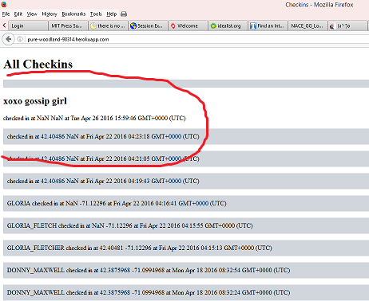

Assignment 4: Security
by Laura Donovan, 4/26/2016
Introduction
This is a security assessment of M. Pokharen's web application, Landmarks. The purpose of this web application is to take in users' login, latitude, and longitude, insert it into a database, and use that cumulative user information to render markers for users as well as for nearby historical landmarks on a map.
My task was to find security and privacy issues with this web application.
Methodology
First, I performed black-box testing: because the default page on the web application showed multiple users' logins, latitudes, and longitudes, I knew that these fields were being entered into a database. I used curl to insert my own HTML or JavaScript code into the database. Then, I looked at the source code.
Abstract of Findings
Many of the issues found had to do with not scrutinizing user input/replacing non-alphanumeric characters and giving users direct access to database information and the application as a whole.
Issues Found
- Issue #1: Injection
- Location: This issue is in the POST API ('/sendLocation').
- Severity: Moderate-- in this case, I only injected HTML code but this could be much worse, involving alteration of existing database records.
- Description of issue: The three key-value pairs posted to /sendLocation are not checked or sanitized, just inserted as-is into the checkins database. Instead of one's real login/latitude/longitude, a user can input their own HTML (or NoSQL) code or just bad data, altering the veracity of the map's representation of user information or even compromising the collection itself.
- Proof of vulnerability:

- Resolution: check and sanitize user input.
- Issue #2: Cross-Site Scripting
- Location: inputted at '/sendLocation', but shown to user in both GET APIs.
- Severity: High. This is one of OWASP's top security risks. The perpetrator can redirect users of the website to other, unsafe websites, access their cookies, or just spam them with alerts.
- Description of issue: the POST API takes three key-value pairs and inserts them into the database; the '/' and '/checkins.json' GET APIs display relevant/all records in that database, allowing for unscrutinized, user-inputted JavaScript to possibly be executed on those routes.
- Proof of vulnerability:
- Resolution: Sanitize user input. See previous resolution.
- Issue #3: Insecure Direct Object References
- Location: the '/checkins.json' GET API
- Severity: Moderate. Can be used to facilitate injection or cross-site scripting.
- Description of issue: The route '/checkins.json' spits out unmodified JSON data from the collection and thus directly displays the keys 'login,' 'lat,' and 'lng' without modifying the key name. This directly provides any potential attacker with the keys they would need to access the database in a fraudulent POST request.
- Proof of vulnerability:
- Resolution: Do not directly output JSON data from the database. Modify key names to something that conveys the same idea but, if used in a POST request, would not allow access to the database. For instance, instead of saying "login," "lat," and "lng," one could write "username," "latitude," and "longitude." This would prevent unauthorized reference to these keys while conserving meaning.
- Issue #4: Bad coding practice
- Location: Response header.
- Severity: Moderate. This could allow any domain to access the site and thus risks Cross-Site Request Forgery.
- Description of issue: All domains are allowed to access/post to the web application, including those which are untrusted.
- Proof of vulnerability:

- Resolution: Replace the '*' with a whitelist of trusted domains.
Conclusion